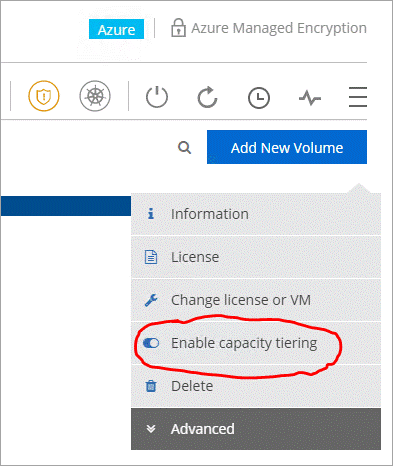
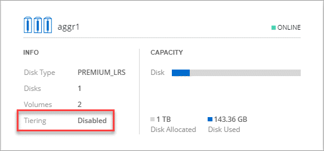
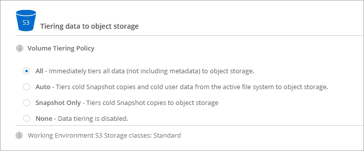
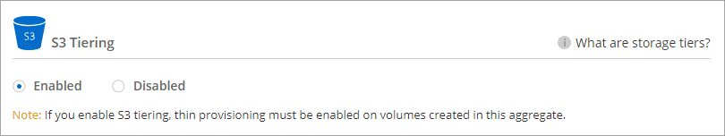

문서 변경 요청
문서 변경 요청 이 페이지 편집
이 페이지 편집 기여하는 방법 자세히 알아보기
기여하는 방법 자세히 알아보기비활성 데이터를 저비용 오브젝트 스토리지로 계층화
사용 빈도가 높은 데이터를 위한 SSD 또는 HDD 성능 계층과 비활성 데이터를 위한 오브젝트 스토리지 용량 계층을 결합하여 Cloud Volumes ONTAP의 스토리지 비용을 절감할 수 있습니다. 데이터 계층화는 FabricPool 기술을 기반으로 합니다. 개괄적인 개요는 을 참조하십시오 "데이터 계층화 개요".
데이터 계층화를 설정하려면 다음을 수행해야 합니다.
대부분의 구성은 지원됩니다. 최신 버전을 실행하는 Cloud Volumes ONTAP 시스템이 있는 경우 실행하는 것이 좋습니다. "자세한 정보".
{kind=link}
볼륨에서 데이터 계층화를 사용하려면 애그리게이트에서 데이터 계층화를 활성화해야 합니다. 새 볼륨 및 기존 볼륨에 대한 요구사항을 알고 있어야 합니다. 자세한 정보.
볼륨을 생성, 수정 또는 복제할 때 Cloud Manager에서 계층화 정책을 선택하라는 메시지가 표시됩니다.

|
데이터 계층화에 필요하지 않은’은 무엇입니까?
|
데이터 계층화를 지원하는 구성
특정 구성 및 기능을 사용할 때 데이터 계층화를 설정할 수 있습니다.
-
데이터 계층화는 다음 버전부터 Cloud Volumes ONTAP에서 지원됩니다.
-
AWS 버전 9.2
-
단일 노드 시스템이 있는 Azure의 버전 9.4
-
HA 쌍이 있는 Azure의 버전 9.6
-
GCP의 버전 9.6
-
-
AWS에서 성능 계층은 범용 SSD(GP3 또는 GP2) 또는 프로비저닝된 IOPS SSD(io1)일 수 있습니다.
처리량 최적화 HDD(st1)를 사용하는 경우에는 데이터를 오브젝트 스토리지에 계층화하지 않는 것이 좋습니다. -
Azure에서 성능 계층은 프리미엄 SSD 관리 디스크, 표준 SSD 관리 디스크 또는 표준 HDD 관리 디스크일 수 있습니다.
-
GCP에서 성능 계층은 SSD 영구 디스크, 균형 잡힌 영구 디스크 또는 표준 영구 디스크일 수 있습니다.
-
데이터 계층화는 암호화 기술을 통해 지원됩니다.
-
볼륨에 씬 프로비저닝이 설정되어 있어야 합니다.
요구 사항
클라우드 공급자에 따라 Cloud Volumes ONTAP에서 콜드 데이터를 오브젝트 스토리지에 계층화할 수 있도록 특정 연결과 사용 권한을 설정해야 합니다.
콜드 데이터를 AWS S3에 계층화해야 하는 요구 사항
Cloud Volumes ONTAP가 S3에 연결되어 있는지 확인합니다. 이 연결을 제공하는 가장 좋은 방법은 S3 서비스에 VPC 엔드포인트를 생성하는 것입니다. 자세한 내용은 을 참조하십시오 "AWS 설명서: 게이트웨이 엔드포인트 생성".
VPC 끝점을 만들 때 Cloud Volumes ONTAP 인스턴스에 해당하는 영역, VPC 및 라우팅 테이블을 선택해야 합니다. 또한 S3 엔드포인트에 대한 트래픽을 활성화하는 아웃바운드 HTTPS 규칙을 추가하려면 보안 그룹을 수정해야 합니다. 그렇지 않으면 Cloud Volumes ONTAP에서 S3 서비스에 연결할 수 없습니다.
문제가 발생하면 을 참조하십시오 "AWS 지원 지식 센터: 게이트웨이 VPC 엔드포인트를 사용하여 S3 버킷에 연결할 수 없는 이유는 무엇입니까?".
콜드 데이터를 Azure Blob 저장소에 계층화하기 위한 요구사항
Cloud Manager에 필요한 권한이 있는 경우 성능 계층과 용량 계층 간의 연결을 설정할 필요가 없습니다. Cloud Manager 정책에 다음과 같은 권한이 있는 경우 Cloud Manager를 통해 VNET 서비스 엔드포인트를 사용할 수 있습니다.
"Microsoft.Network/virtualNetworks/subnets/write",
"Microsoft.Network/routeTables/join/action",사용 권한은 최신 에 포함되어 있습니다 "Cloud Manager 정책".
콜드 데이터를 Google Cloud Storage 버킷에 계층화해야 하는 요구 사항
-
Cloud Volumes ONTAP가 상주하는 서브넷은 개인 Google 액세스용으로 구성해야 합니다. 자세한 지침은 을 참조하십시오 "Google Cloud 설명서: 개인 Google Access 구성".
-
다음 요구 사항을 충족하는 서비스 계정이 필요합니다.
-
사전 정의된 스토리지 관리자 역할이 있어야 합니다.
-
Connector 서비스 계정은 이 계층화 서비스 계정의 _ 서비스 계정 사용자 _ 여야 합니다.
-
고객이 관리하는 암호화 키로 버킷을 암호화하려면 Google Cloud 스토리지 버킷에서 키를 사용할 수 있습니다.
-
요구사항을 구현한 후 데이터 계층화를 사용하도록 설정
연결 또는 권한 문제가 없는 경우, Cloud Manager는 시스템이 생성될 때 콜드 데이터에 대한 오브젝트 저장소를 생성합니다. 시스템을 생성하기 전까지는 위에 나열된 요구 사항을 구현하지 않았다면 수동으로 계층화를 설정해야 오브젝트 저장소가 생성됩니다.
-
Canvas 페이지에서 Cloud Volumes ONTAP 인스턴스의 이름을 두 번 클릭합니다.
-
메뉴 아이콘을 클릭하고 * 용량 계층화 활성화 * 를 선택합니다.

Cloud Manager에서 시스템을 생성할 때 데이터 계층화를 설정할 수 없는 경우에만 이 옵션이 표시됩니다. -
클라우드 관리자가 이 Cloud Volumes ONTAP 시스템이 계층형 데이터에 사용할 오브젝트 저장소를 만들 수 있도록 * 활성화 * 를 클릭합니다.
애그리게이트에서 계층화가 설정되었는지 확인합니다
볼륨에서 데이터 계층화를 사용하려면 애그리게이트에서 데이터 계층화를 활성화해야 합니다. 새 볼륨 및 기존 볼륨에 대한 요구사항을 알고 있어야 합니다.
-
* 새 볼륨 *
새 볼륨에서 데이터 계층화를 사용하는 경우에는 애그리게이트에서 데이터 계층화를 사용할 필요가 없습니다. Cloud Manager는 계층화가 활성화된 기존 애그리게이트에 볼륨을 생성하거나, 데이터 계층화가 활성화된 애그리게이트가 아직 존재하지 않으면 볼륨에 대한 새 애그리게이트를 생성합니다.
-
* 기존 볼륨 *
기존 볼륨에서 데이터 계층화를 사용하려면 기본 애그리게이트에 데이터 계층화가 설정되어 있는지 확인해야 합니다. 기존 애그리게이트에서 데이터 계층화를 사용하지 않는 경우 System Manager를 사용하여 기존 애그리게이트를 오브젝트 저장소에 연결해야 합니다.
-
Cloud Manager에서 작업 환경을 엽니다.
-
메뉴 아이콘을 클릭하고 * 고급 * 을 클릭한 다음 * 고급 할당 * 을 클릭합니다.
-
애그리게이트에서 계층화가 설정되었는지 또는 해제되었는지 확인합니다.

-
System Manager에서 * Storage > Tiers * 를 클릭합니다.
-
Aggregate에 대한 작업 메뉴를 클릭하고 * Attach Cloud Tiers * 를 선택합니다.
-
연결할 클라우드 계층을 선택하고 * 저장 * 을 클릭합니다.
이제 다음 섹션에 설명된 대로 새 볼륨과 기존 볼륨에 대해 데이터 계층화를 설정할 수 있습니다.
읽기-쓰기 볼륨의 데이터 계층화
Cloud Volumes ONTAP는 읽기-쓰기 볼륨의 비활성 데이터를 비용 효율적인 오브젝트 스토리지에 계층화하여 핫 데이터에 대한 성능 계층을 확보할 수 있습니다.
-
작업 환경에서 새 볼륨을 생성하거나 기존 볼륨의 계층을 변경합니다.
작업 조치 새 볼륨을 생성합니다
새 볼륨 추가 * 를 클릭합니다.
기존 볼륨을 수정합니다
볼륨을 선택하고 * 디스크 유형 및 계층화 정책 변경 * 을 클릭합니다.
-
계층화 정책을 선택합니다.
이러한 정책에 대한 설명은 를 참조하십시오 "데이터 계층화 개요".
-
예 *

데이터 계층화를 지원하는 애그리게이트가 아직 존재하지 않는 경우 Cloud Manager는 볼륨에 대한 새로운 애그리게이트를 생성합니다.
-
데이터 보호 볼륨에서 데이터 계층화
Cloud Volumes ONTAP는 데이터 보호 볼륨의 데이터를 용량 계층으로 계층화할 수 있습니다. 대상 볼륨을 활성화하면 데이터가 읽혀지면서 성능 계층으로 서서히 이동합니다.
-
Canvas 페이지에서 소스 볼륨이 포함된 작업 환경을 선택한 다음 볼륨을 복제할 작업 환경으로 끌어다 놓습니다.
-
표시되는 메시지에 따라 계층화 페이지로 이동한 다음 오브젝트 스토리지에 데이터 계층화를 설정합니다.
-
예 *

데이터 복제에 대한 도움말은 을 참조하십시오 "클라우드 간 데이터 복제".
-
계층화된 데이터에 대한 스토리지 클래스 변경
Cloud Volumes ONTAP를 구축한 후 30일 동안 액세스하지 않은 비활성 데이터의 스토리지 클래스를 변경하여 스토리지 비용을 절감할 수 있습니다. 데이터에 액세스하는 경우 액세스 비용이 더 높아지므로 스토리지 클래스를 변경하기 전에 액세스 비용을 고려해야 합니다.
계층형 데이터를 위한 스토리지 클래스는 시스템 전체에 적용됩니다. 즉, 볼륨을 기준으로 하지 않습니다.
지원되는 스토리지 클래스에 대한 자세한 내용은 를 참조하십시오 "데이터 계층화 개요".
-
작업 환경에서 메뉴 아이콘을 클릭한 다음 * 스토리지 클래스 * 또는 * Blob 스토리지 계층화 * 를 클릭합니다.
-
스토리지 클래스를 선택한 다음 * 저장 * 을 클릭합니다.
데이터 계층화의 사용 가능한 공간 비율을 변경합니다
데이터 계층화를 위한 여유 공간 비율은 데이터를 오브젝트 스토리지로 계층화할 때 Cloud Volumes ONTAP SSD/HDD에 필요한 여유 공간을 정의합니다. 기본 설정은 10%의 여유 공간이지만 요구 사항에 따라 설정을 조정할 수 있습니다.
예를 들어, 구입한 용량을 사용하기 위해 10% 미만의 여유 공간을 선택할 수 있습니다. 그런 다음, 추가 용량이 필요할 때(aggregate의 디스크 제한에 도달할 때까지) Cloud Manager를 통해 추가 디스크를 구입할 수 있습니다.

|
공간이 부족하면 Cloud Volumes ONTAP에서 데이터를 이동할 수 없어 성능이 저하될 수 있습니다. 모든 변경은 신중하게 수행해야 합니다. 확실하지 않은 경우 NetApp 지원 팀에 연락하여 안내를 받으십시오. |
이 비율은 오브젝트 저장소에서 데이터를 읽을 때 Cloud Volumes ONTAP 더 나은 성능을 제공하기 위해 데이터를 SSD/HDD로 이동하기 때문에 재해 복구 시나리오에 중요합니다. 공간이 부족하면 Cloud Volumes ONTAP에서 데이터를 이동할 수 없습니다. 이 점을 고려하여 비율을 변경하면 비즈니스 요구 사항을 충족할 수 있습니다.
-
Cloud Manager 콘솔의 오른쪽 상단에서 * 설정 * 아이콘을 클릭하고 * 커넥터 설정 * 을 선택합니다.

-
Capacity * 에서 * Aggregate Capacity Thresholds - Free Space Ratio for Data Tiering * 을 클릭합니다.
-
요구 사항에 따라 여유 공간 비율을 변경하고 * Save * 를 클릭합니다.
자동 계층화 정책의 냉각 기간 변경
Cloud Volumes ONTAP 볼륨에서 _auto_Tiering 정책을 사용하여 데이터 계층화를 활성화한 경우 비즈니스 요구에 따라 기본 냉각 기간을 조정할 수 있습니다. 이 작업은 API를 통해서만 지원됩니다.
냉각 기간은 볼륨의 사용자 데이터가 "콜드" 상태로 간주되어 오브젝트 스토리지로 이동되기 전에 비활성 상태로 유지해야 하는 일 수입니다.
자동 계층화 정책의 기본 냉각 기간은 31일입니다. 냉각 기간을 다음과 같이 변경할 수 있습니다.
-
9.8 이상: 2일에서 183일
-
9.7 이하: 2일~63일
-
볼륨을 생성하거나 기존 볼륨을 수정할 때 API 요청과 함께 _minimumCoolingDays_매개 변수를 사용하십시오.